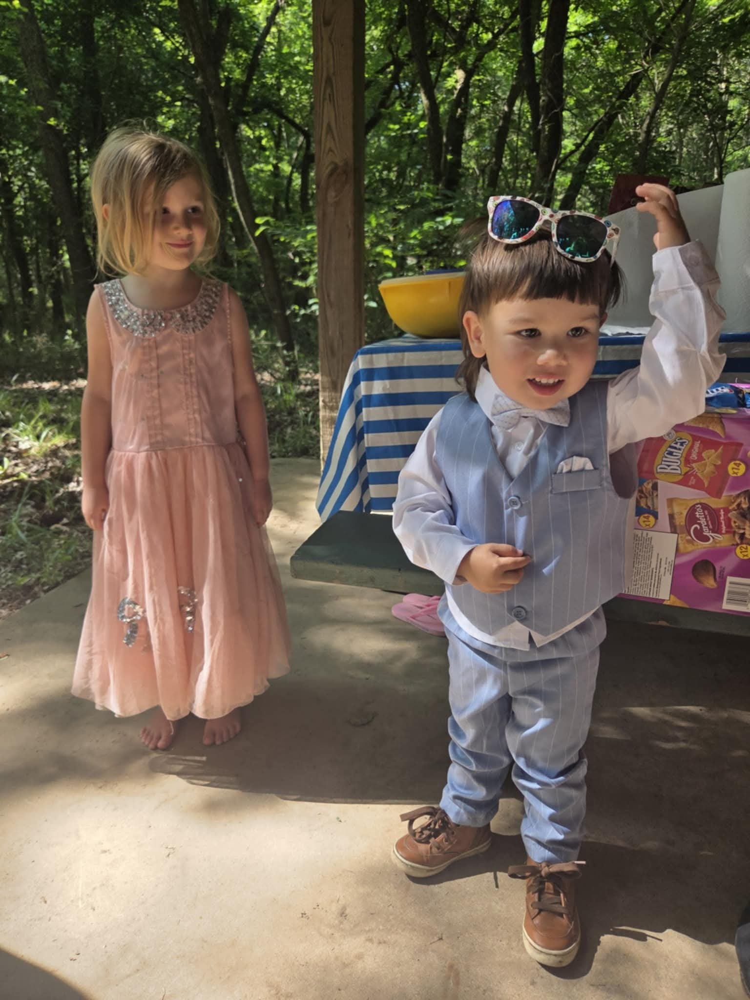

Sprouts & Scouts
Join us for a child-led forest adventure where curiosity sets the course. We’ll explore wooded trails, wildlife signs, wild edibles (when appropriate), and whatever wonders the day offers. These sessions are designed to be accessible to young children, with the understanding that older kids are welcome and encouraged to deepen the exploration through observation, helping roles, and skill-building. The pace is guided by our youngest adventurers, while older participants naturally take on leadership, inquiry, and mentorship roles. Each walk is different—we adapt to the energy, interests, and needs of the group. Adults help shepherd the experience while children choose, create, negotiate, and practice social skills in a real-world setting. Come prepared for whatever adventure unfolds: snacks, water, bug protection, and weather-/terrain-appropriate clothing and footwear are recommended.